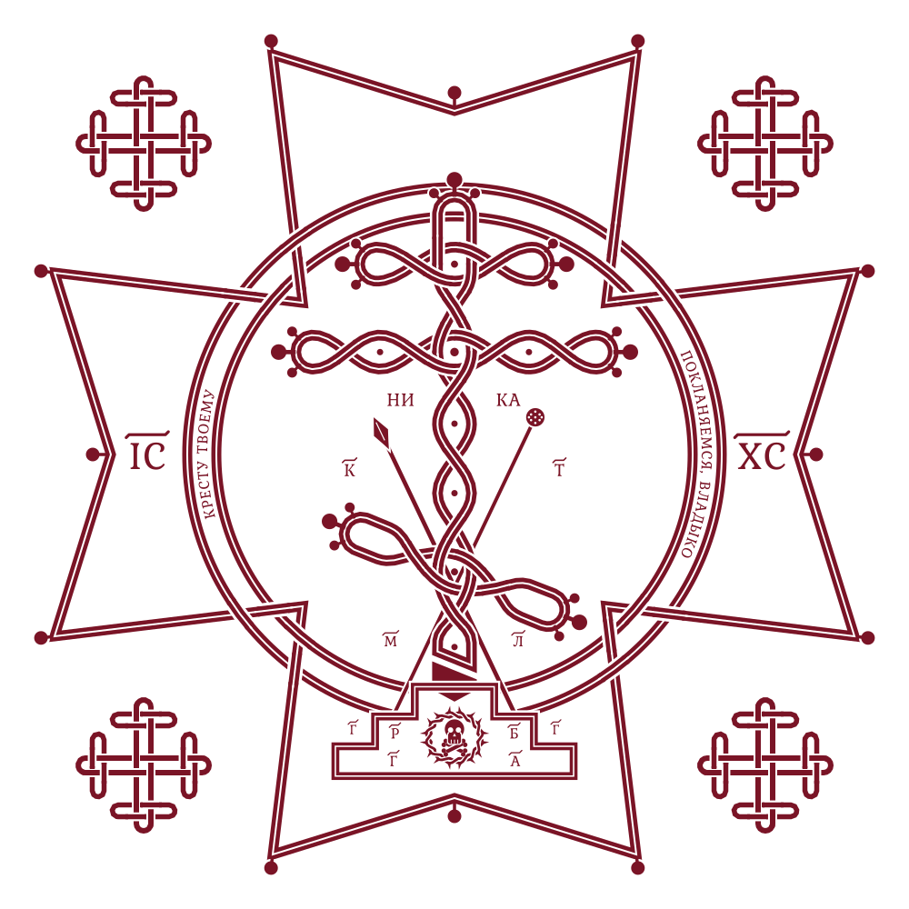

Jämförelse · utkast 7 okt 2026 · inte advokatprodukt · inte paper-valvet
Anojans Sivarasa, 24, lankesisk gästarbetare. Greps i juli 2026. Första dom: fem år och 3 miljoner riyal enligt cyberbrottslagen. Efter att åklagaren 17 september fick målet prövat enligt sharia: döden.
| Claim | Status | Källa |
|---|---|---|
| Art. 6 cyberbrottslagen: material som skadar religiösa värderingar, via nät. Tak 5 år och 3 miljoner riyal | **BELAGD** | Lag 2007 · UNODC art. 6 |
| Al-Ahsa 28 juli: straffet låg i det taket | **BELAGD** | BBC 5 okt 2026 · Jaffna Monitor 19 sep |
| Åklagaren bytte spår till sharia; överdomstolen skärpte till döden | **BELAGD** | BBC · Jaffna Monitor |
| Kommentaren raderades; ursäktsvideo lades upp; skärmdump gick via arbetsgivaren | **BELAGD** *som BBC-återgivning* | BBC |
| Avrättningsdatum satt | **OBELAGT** | ingen saudisk kungörelse |
Aktör: saudisk åklagare och överdomstol — namngivna institutioner. Gärningen är en raderad kommentar, inte våld mot person.
| Post | Vad fallet lägger till |
|---|---|
| Cairo 1990 vs UDHR 1948 | Cairo binder yttrande till sharia. Här syns bindningen som straffbyte, inte som deklarationstext. |
| Apostasidöd / ridda | Inte avfall. Samma logik: religionen är målsägande. |
| Vilks · Rushdie · Jomshof | Samma mekanism, annan jurisdiktion. Här är straffet redan utdömt. |
| Den civiliserade gästen | Gästarbetare. Värdlandets lag binder, men kapitalstraff för en kommentar är frihetsärendet. |
Källa-md: jamforelse/saudi-cyberbrott-vs-sharia-sivarasa.md